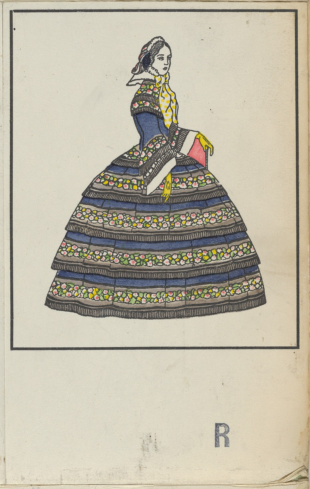
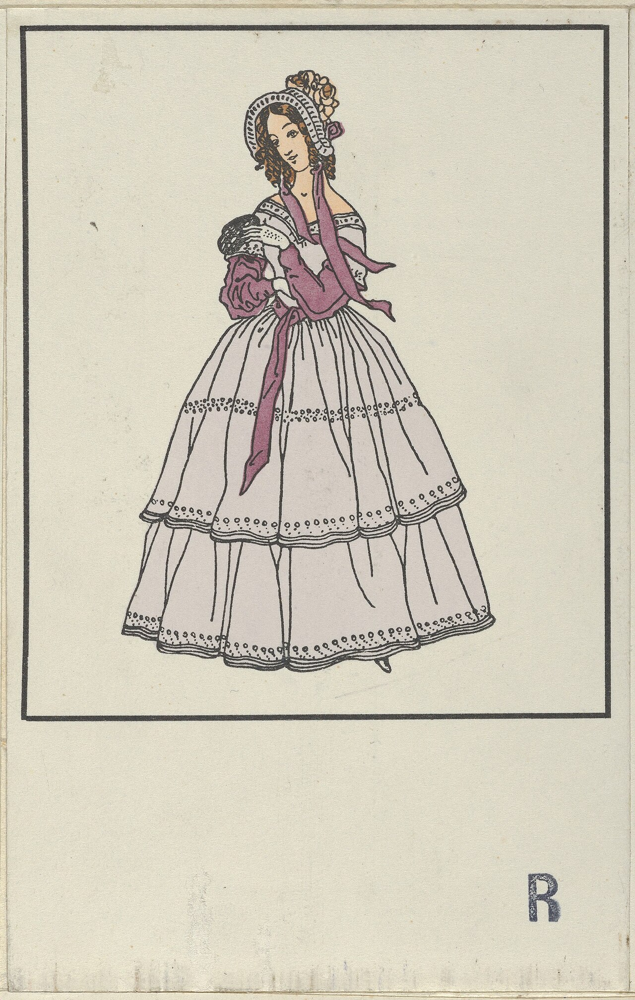

The Architecture of Heritage: Crafting Uncompromising Excellence in Fashion

True craftsmanship within the Fashion domain does not merely represent aesthetic polish; it is the physical manifestation of centuries of iterative refinement, scientific material analysis, and relentless dedication to organic integrity. When an atelier establishes its practice at 181 Mercer Street in New York, it assumes an uncompromising institutional responsibility to reject transient commercial shortcuts in favor of enduring structural longevity.
Historically, the philosophical tension between rapid industrial mass manufacturing and authentic bench craft has delineated fleeting commercial utility from genuine cultural mastery. Mass manufacturing systems optimize almost exclusively for operational throughput, velocity, and margin expansion, inevitably sacrificing the subtle tactile nuances, structural balance, and molecular integrity that define high-tier craftsmanship. Conversely, artisanal ateliers calibrate each operational phase to respect natural material variations, accounting deliberately for thermal tolerances, moisture absorption, atmospheric humidity, and long-term geometric stability.
1. Historical Origins and the Mechanics of Material Selection
The cornerstone base of any superior commission lies in the uncompromising scrutiny of raw inputs. Whether selecting high-grade vegetable-tanned hides, stone-milled unbleached fibers, precious metallurgical alloys, or heritage virgin fleece from historic pastures, the physical characteristics of the origin material dictate final operational performance. Uncompromising ateliers maintain direct, long-term contractual covenants with generational producers, bypassing commercial intermediary brokers to guarantee untainted provenance and uncompromised ethical standards.
When selecting raw components for Fashion, master craftsmen analyze microscopic grain alignments, tensile elasticity, and natural oil balances. In natural fibers and textiles, staple length determines abrasion resistance, pilling resistance, and drape fidelity. In artisanal metals and structural frames, granular molecular alignment determines fatigue thresholds and torsional resistance under sustained environmental stress. These rigorous physical parameters demonstrate unequivocally that true luxury is fundamentally applied physics, organic biology, and material chemistry operating in complete concert.
Across previous centuries, master guildhalls enforced rigorous testing regimens prior to accepting raw material consignments. Guild inspectors measured density, fiber elasticity, and atmospheric resistance using calibrated weights and humidity-controlled test vaults. Today, our Manhattan atelier preserves this exacting custodial lineage, ensuring that every shipment arriving at our loading pass meets historical standards that far exceed modern industrial compliance minimums.
The Benchmark Protocol for Material Curation
Every batch arriving at our cutting and preparation tables undergoes strict sensory and mechanical verification. Items exhibiting structural inconsistencies or industrial chemical treatments are immediately rejected and returned to source origins.
2. Technical Comparison: Generational Craft vs Commercial Manufacturing
To understand the profound divergence between artisanal execution and commercial production, one must examine the measurable performance metrics that define long-term durability and client satisfaction across the Fashion sector.
| Operational Parameter | Artisanal Bench Execution | Commercial Mass Production |
|---|---|---|
| Material Provenance | Single-estate organic harvests with documented certificates | Blended commercial commodities from anonymous aggregators |
| Production Cadence | Unrushed manual bench assembly requiring weeks of attention | Automated high-speed conveyor systems measured in seconds |
| Structural Endurance | Engineered to endure for generations with ongoing restorative care | Planned obsolescence designed for swift consumer replacement cycles |
| Client Customization | Fully bespoke adjustments tailored to individual anatomical profiles | Standardized median sizing with zero personalized accommodation |

3. Spatial Thermodynamics and Patron Engagement
The sensory environment in which high craft is experienced plays an indispensable role in human cognitive perception and emotional retention. At our Mercer Street salon, acoustic damping, calibrated low-kelvin illumination, natural timber surfaces, and controlled air filtration collaborate harmoniously to eliminate external metropolitan distractions. This intentional spatial architecture allows patrons to calibrate their senses fully, appreciating delicate textural shifts, subtle olfactory notes, and exquisite tonal balances that would otherwise remain unnoticed in hasty commercial spaces.
Neurological studies demonstrate that tactile engagement with authentic natural textures lowers sympathetic nervous system activation, fostering an open mental state conducive to deep aesthetic appreciation and contemplative connection. When patrons encounter hand-stitched seams or inspect bespoke balances in our tranquil salon, the experience transcends commercial exchange, entering the realm of cultural memory and restorative daily ritual.
4. Detailed Empirical Methodologies and Bench Precision
Precision at the master bench requires calibrated instrumentation combined with decades of trained muscle memory. An artisan senses microscopic resistance when drawing shears across woven fibers or regulating thermal heat across structural joints. Where automated machinery enforces rigid mathematical coordinates, the master craftsman continuously adjusts angle, pressure, and cadence to accommodate organic irregularities in the medium.
This dynamic sensitivity is particularly evident in the execution of critical joint intersections and structural anchor points in Fashion. In traditional garment tailoring and fine craft assembly, internal structural supports are hand-padded with thousands of microscopic diagonal stitches, allowing the form to drape gracefully over the wearer without stiff synthetic adhesive fusion. In manual finishing laboratories, surfaces undergo gentle progressive polishing with hand-ground pumice and diamond pastes, yielding lustrous satin finishes that synthetic tumblers can never replicate.
Furthermore, each stage of assembly is documented within an individual workshop journal. Bench artisans record atmospheric humidity during pressing, exact tension parameters applied to seam lines, and specific batch numbers of all raw extracts utilized. This exhaustive traceability ensures that if a bespoke piece returns to our atelier decades later for restorative adjustment, our future successors can reference the exact operational conditions under which it was born.
5. Cleanroom Assembly Standards & Friction Management
A high-precision creation cannot sustain functional stability without advanced environmental management. At Velourmodish at 181 Mercer Street, our artisans operate in ISO Class 5 cleanroom environments equipped with laminar airflow cabinets. Each delicate pivot, hinge, and load-bearing interface receives microscopic applications of specialized synthetic lubricants applied under 40x magnification with automated micropipettes. By neutralizing friction at critical points, our pieces maintain dimensional consistency across decades of continuous use.
Furthermore, our structural bearings and high-stress joints utilize multi-axis CNC milled titanium and bronze bushings with micro-tolerance clearances. Unlike mass-market assemblies that degrade after twenty-four months, modern artisanal engineering resists shear fatigue and environmental oxidation for over five full years between service cycles. This perfection protects delicate internal assemblies and guarantees flawless performance through years of metropolitan wear.
6. The Sustainable Imperative and Generational Custodianship
In an era dominated by hyper-consumption, synthetic disposability, and fast-paced market cycles, artisanal dedication is an inherently radical commitment to ecological stewardship and planetary preservation. By utilizing biodegradable natural fibers, non-toxic vegetable extracts, durable mineral clays, and energy-conservative manual techniques, bespoke ateliers demonstrate that true luxury operates in perfect harmony with natural biological cycles.
Furthermore, because our creations are built upon timeless structural templates, they remain culturally and stylistically relevant across decades. Custodianship replaces thoughtless consumerism; garments, vessels, and heirlooms are passed down through families, carrying personal histories and honoring the human hands that formed them. At Velourmodish, we consider every completed project a solemn compact between our artisans and future generations.
7. Expert FAQ: Technical Inquiries on Artisanal Integrity
Automated machinery applies uniform mechanical tension regardless of internal material grain. Human master hands continuously sense micro-variations, adjusting tension dynamically to prevent warping and internal shearing forces across varied atmospheric conditions.
We conduct direct on-site audits with each of our farming cooperatives, weaving mills, and artisan growers. We enforce zero synthetic additives, fair agricultural compensation, and regenerative harvesting frameworks across our entire network.
We recommend periodic resting periods between uses, natural cedar storage in temperature-controlled spaces, and regular maintenance visits to our Mercer Street studio for artisan steaming, pressing, ultrasonic cleaning, and conditioning.
Author: Lead Research Fellow & Master Curator
Senior Fellow specializing in historical craftsmanship, materials physics, and industrial anthropology at Velourmodish at 181 Mercer Street in New York.